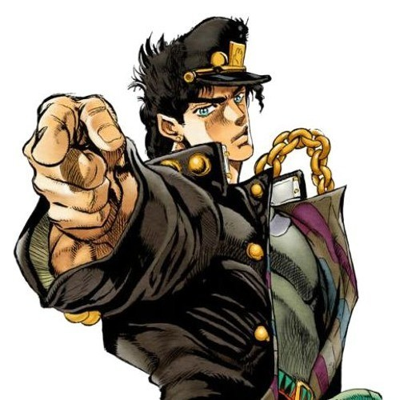

Disegno digitale
Tema: Redraw

Per questo disegno digitale ho utilizzato una tavolettagrafica, XP-PEN12, e usato dei semplici pennelli del programma Photoshop. La consegna consisteva nel “ridisegnare un soggetto” a nostro piacere e, tra le tante opzioni, quella che più mi è risaltata all’occhio è stata proprio quella di Alberto Angela; quindi ho pensato: “ma come sarebbe un Alberto Angela uscito dal mondo delle Bizzare Avventure di Jojo?”. E questo è stato il risultato.
Reference 
Personaggio: Jotaro Kujo
Da: Le Bizzare Avventure di Jojo